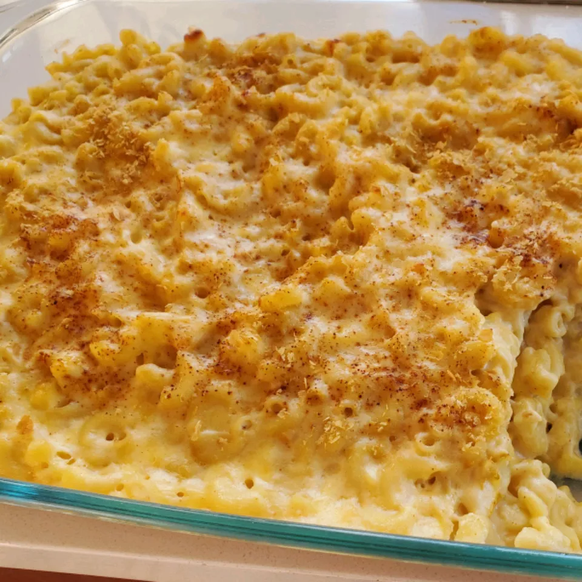

<!DOCTYPE html>
<html lang="en">
<head>
    <meta charset="UTF-8">
    <meta http-equiv="X-UA-Compatible" content="IE=edge">
    <meta name="viewport" content="width=device-width, initial-scale=1.0">
    <title>Mac & Cheese</title>
</head>

</html><h1>Mac and Cheese</h1>


<body>
    <p><em>A pasta dish covered in melted and baked cheese.</em></p>

    <h2>Ingredients</h2>
        <ul>
            <li>Macaroni</li>
            <li>Butter</li>
            <li>Flour</li>
            <li>Milk</li>
            <li>Cheese</li>
            <li>Seasonings</li>
        </ul>


    <h2>Directions:</h2>
    <ol>
        <li><strong>Boil the noodles</strong> in salted water until al dente. Drain and transfer to prepared baking dish.</li>
        <li><strong>Make cheese sauce:</strong> Melt butter, then whisk in the flour. Whisk in the milk, bring to a simmer and sit in cheese. Season a desired. Continue simmering until sauce thickens and then pour the sauce over the noodles. Stir to coat all noodles.</li>
        <li><strong>Bake</strong> the mac and cheese in a preheated oven until the top is golden brown.</li>
    </ol>
</body>